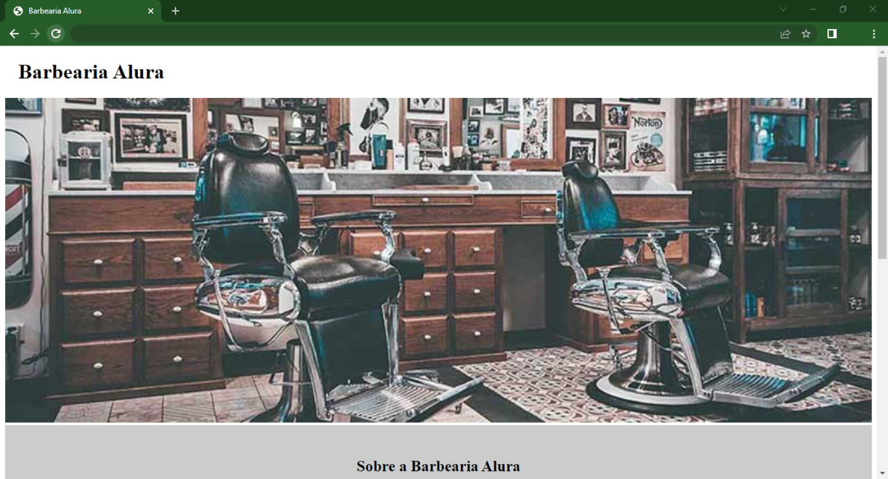
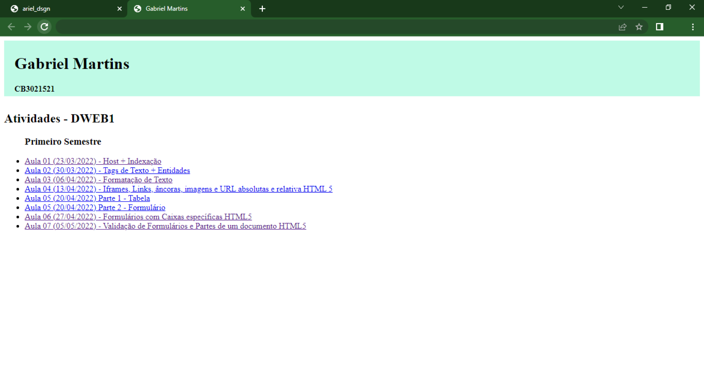

Minhas primeiras noções de sobre HTML5 e CSS, foram através do Curso HTML5 e CSS3 parte 1: A primeira página da Web da Alura, onde aprendi sobre, principalmente, tags HTML, a estrutura do CSS e bastante sobre a forma dos navegadores.
Já no IFSP com as aulas de Desenvolvimento Web, dei alguns "passos para trás" entendendo primeiramente, como funciona a internet e essencialmente, como hostear um site, para depois começar a criar sites do 0 e também obter conhecimento sobre ferramentas que ajudam nossa experiência em programação como Bootstrap, WordPress, Joomla, etc, otimizando ações e tempo.
